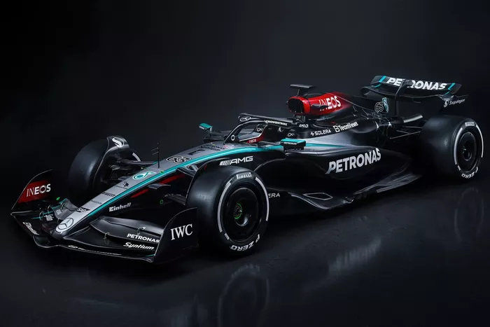

Carros Das Equipes


VF24 HAAS
Material do chassi Estrutura composta de fibra de carbono e favo de mel, Material da Carroçaria Fibra de Carbono, Suspensão dianteira e traseira, Suspensão independente, Amortecedores ZF Sachs / Öhlins, Transmissão Diferencial de deslizamento limitado hidráulico com caixa semiautomática sequencial e controlada eletronicamente, troca rápida (oito marchas, mais ré), Sistema de freio Freios a disco em fibra de carbono, pastilhas e pinças de seis pistões.
C44 Sauber
Estruturas de Segurança: Fibra de carbono e inclui uma bexiga de célula de combustível ATL, monocoque protegido contra intrusão; Suspensão: Braço duplo em fibra de carbono, pullrod, braço duplo em fibra de carbono e pushrod; Sistema de Freio: Brembo autoventilantes em carbono; Sistema de Recuperação de Energia: Unidade Motor Geradoras elétricas; Caixa de Velocidade: Fibra de carbono, contendo oito velocidades de avanço e uma de ré; Rodas e Pneus: 18 polegas sendo Pirelli.


FW46 Williams
Chassi: Monocoque de laminado de carbono e favo de mel; Transmissão: Unidade Mercedes-AMG F1 de oito marchas à frente e uma à ré, com caixa principal de fibra de carbono; Pneus: Fornecidos pela Pirelli. Dianteiros: 305/720-18, Traseiros: 405/720-18; Unidade de Potência: Motor Mercedes-AMG F1 M15 E PERFORMANCE; Peso: Atende ao mínimo estabelecido pela FIA: 798 kg; Dimensões: Altura total de 970 mm e largura total de 2000 mm.
A524 Alpine
Chassi: È construído com uma monocoque composta de fibra de carbono moldada e núcleo de alumínio; Transmissão e Hidráulica: Possui uma caixa de câmbio semi-automática de oito velocidades e direção hidráulica, DRS e embreagem também são controlados hidraulicamente; Sistema de Freios: São compostos por discos e pastilhas de carbono; Velocidade Máxima de 355 km/h, Peso de 798 kg e Potência de 950+ HP; O motor é um V6 de 1,6 litro, com recuperação de energia e um limite de rotação de 15.000 rpm.
VCARB01 Visa Cash App RB
Descriçao carro VCARB01
AMR24 Aston Martin
Descriçao carro AMR24


SF-24 Ferrari
Descriçao carro SF-24
W15 Mercedes
Descriçao carro W15


MCL38 MecLaren
Descriçao carro MCL38
RB20 Red Bull RAcing
Descriçao carro RB20